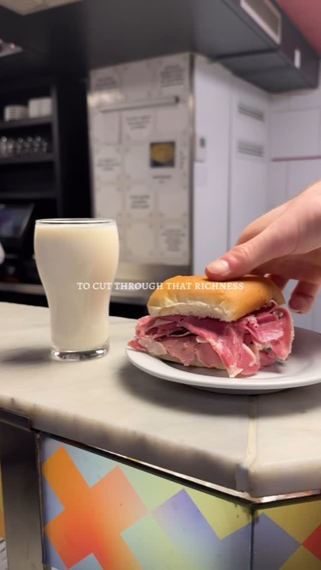
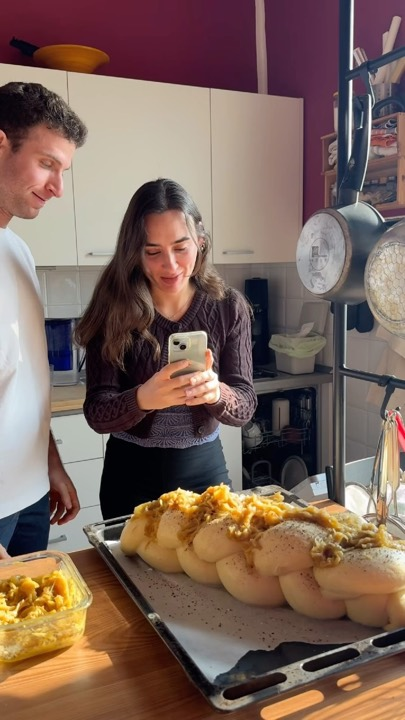
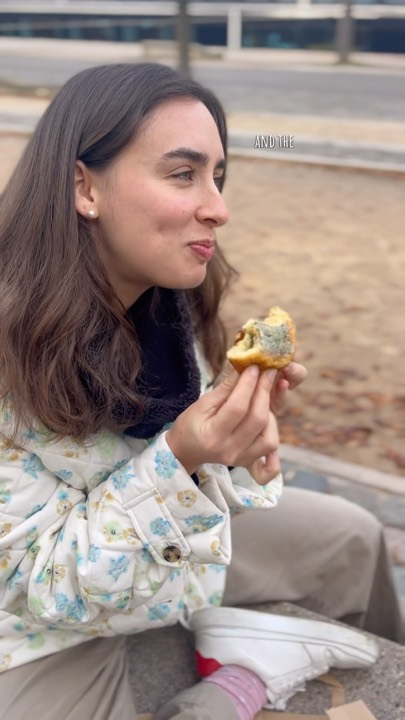
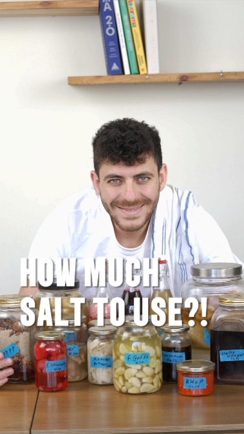
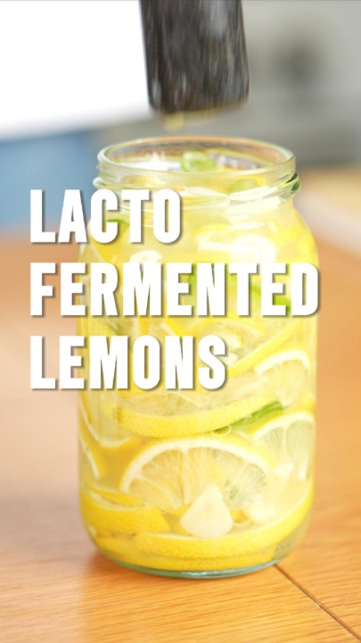
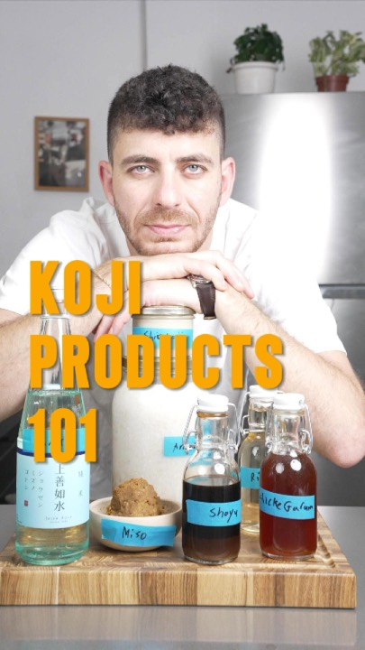

Sharon & Gali
We plan, shoot and edit founder-led content, so you bring the knowledge and the face, and we do everything else: the strategy, the ideas, the filming and the edit.
Gali Firon
New York. Works in marketing at an ad tech company, so she sees what actually makes people stop and buy. A natural storyteller, and the creator behind millions of views on her own food page. She's the one on the ground, shooting.
Sharon Gol
Israel. A background in performance marketing, and over a year growing social accounts for food businesses and founders, from strategy to the final cut. Grew chef Shalom Elbert's personal brand from about 4K to 59K followers.
We met studying gastronomy in Italy. Today we plan and write every piece together, and split the editing between us. For you, we're one team.
Gali's own page
A person on camera, telling a story people want to watch to the end.

A 1945 Amsterdam deli, in 70 seconds
One sandwich, one glass of milk, and a story around it.
Why it works: People follow a person before they follow a product. A face and a story keep them watching to the end.

Canelés, start to finish
A fussy process made easy to follow, with the full recipe in the caption.
Why it works: A complicated process, made simple enough to follow. Content people save and come back to.

Brioche in Lyon
Warm and personal, never a hard sell.
Why it works: Warm and personal. It sells the experience without ever feeling like an ad.
Shalom Elbert, chef and founder
A personal brand built on teaching, grown from about 4K to 59K followers.

"How much salt do I need?"
The question his followers ask him most, answered in one reel.
Why it works: Every question a brand gets asked again and again is a reel waiting to be made.

Fermented lemons
Clear, simple teaching from the person who knows the subject best.
Why it works: Real expertise, explained simply. It builds trust faster than any claim can.

"Comment MOLD for the guide"
A short teaching reel that ends with a free beginner's guide for anyone who comments.
Why it works: Teaching that ends in a DM and a lead, not only a like. It turns views into potential customers.
Food businesses
Brands, not people, where the content has to bring customers through the door.
Sunflour Bakery, Haifa
A quiet account brought back to life with recipes, behind the scenes and fun food content.
Why it works: Consistent, varied content can wake up a quiet account and turn it back into a source of customers.
Focaccia
Their bakery focaccia, with the full recipe in the caption.
Why it works: Giving away a signature recipe builds trust, and people still come in to buy the real thing.
Boyos
A traditional pastry, shown step by step from the bakery kitchen.
Why it works: Behind the scenes of how something is made makes people value it more.
Pastry cream
"The last pastry cream recipe you'll ever need."
Why it works: A bold, confident hook, and a recipe people save to make again.
All three are from the bakery's recipe series. Captions are in Hebrew.
Numbers are Instagram plays and followers as of September 24, 2026. Tap any card to watch.
Next
We're putting together two options for you, a light one and a fuller one, and we'll walk you through them on a quick call.
Sharon · sharongolt@gmail.com
Gali · hellogalifiron@gmail.com